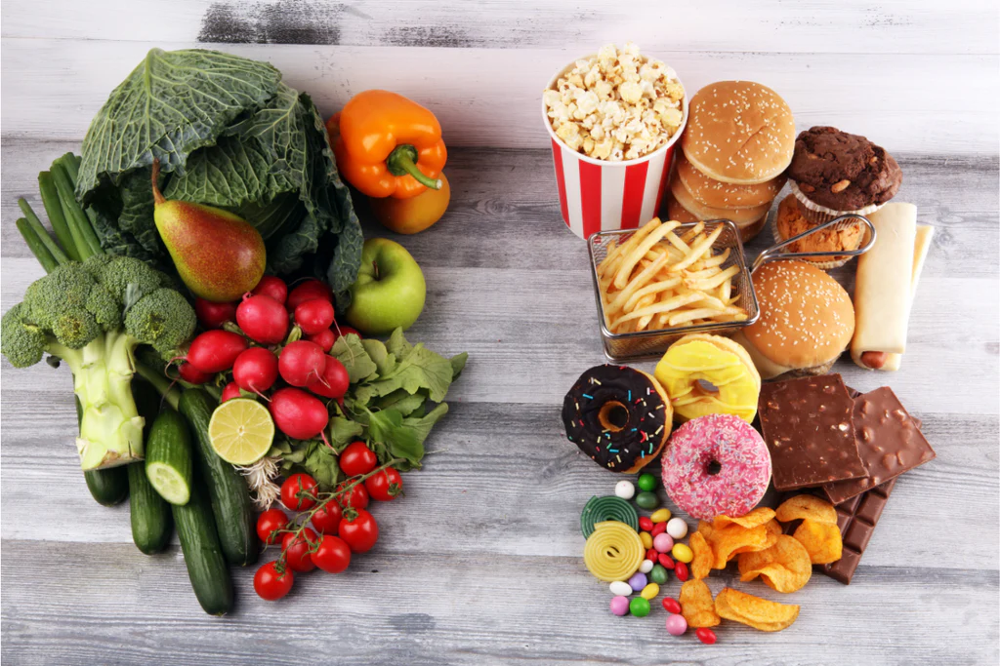

Quick Recap: Understanding the Need
Our Team

Nicole Kwik
Project Lead

George Wang
Research Lead

Merry Cui
Writing & Presentation Lead

Ruolin Zhang
Design Lead
The Challenge College Students Face
Many college students face a significant challenge: struggling to cook for themselves and maintain a healthy diet while living independently.

- They often rely on costly takeout or processed foods, choosing convenience over nutrition.
- Without accessible, time-efficient cooking solutions, they experience:
- Poorly balanced diets
- Difficulty managing food expenses
- Lack of confidence in cooking skills
- Missed opportunities to build lifelong healthy habits
Key Opportunity: There is a clear need for practical, confidence-building cooking resources tailored to students’ limited time, budget, and kitchen equipment.
Who We're Designing For: Key Insights
Our target learners are primarily busy college students navigating tight schedules, limited kitchen setups, and growing health awareness. Based on 20 student interviews and survey responses, we identified patterns in motivation, constraints, and learning behavior.
- Motivated but constrained: 83% want to eat healthier and 55% want to save money—but 72% say they lack time to cook, often preferring meals that take 30 minutes or less.
- Limited resources: Most students live in compact shared spaces and 94% rely solely on basic kitchen tools (e.g., microwave, hot plate).
- Skill confidence varies: While over two-thirds feel unprepared in the kitchen, 44% report feeling confident—highlighting a wide range of experience levels.
- Planning & budgeting challenges: 33% are reluctant to plan recipes, and many seek support with grocery budgeting and meal preparation.
- How they learn: Students prefer step-by-step guides (61%) and recipes using minimal equipment (44%), often turning to social media (72%) and YouTube (55%) for guidance.
Key Focus: We're designing a mobile-friendly, visually engaging, and beginner-friendly cooking solution that fits into students’ busy lives—empowering them with confidence, practical skills, and sustainable habits.

Learning Goals and Objectives
Learning Goal: Learners will be able to confidently plan and cook healthy, time efficient meals using basic kitchen tools.
1. Students will apply foundational cooking skills to prepare quick, healthy meals using basic tools
- Students will list essential kitchen tools and ingredients needed to cook quick and healthy meals
- Students will select key ingredients and cooking techniques appropriate for a given recipe
- Students will apply learned cooking skills when following recipes and cooking tutorials
- Students will adapt five foundational cooking techniques (e.g., chopping vegetables, stir-frying, boiling grains, baking proteins, meal prepping) based on the tools and ingredients available to them
2. Students will make informed decisions about meal planning based on time, budget, and dietary needs
- Students will compare different meal prep and cooking methods to determine which method is the most time efficient
- Students will select budget-friendly, multi-use ingredients that align with personal dietary needs and minimize waste
- Students will design a personalized meal plan that aligns with their budget, time constraints, dietary restrictions, and preferences
3. Students will develop the motivation and confidence to cook regularly and sustain healthy eating habits
- Students will develop a sense of motivation to cook regularly by identifying personal goals and values related to health, time, and lifestyle
- Students will reflect on their cooking experiences to build confidence and recognize progress in their skill development
- Students will demonstrate increased self-efficacy by independently following recipes and preparing meals that align with their preferences and busy lifestyles